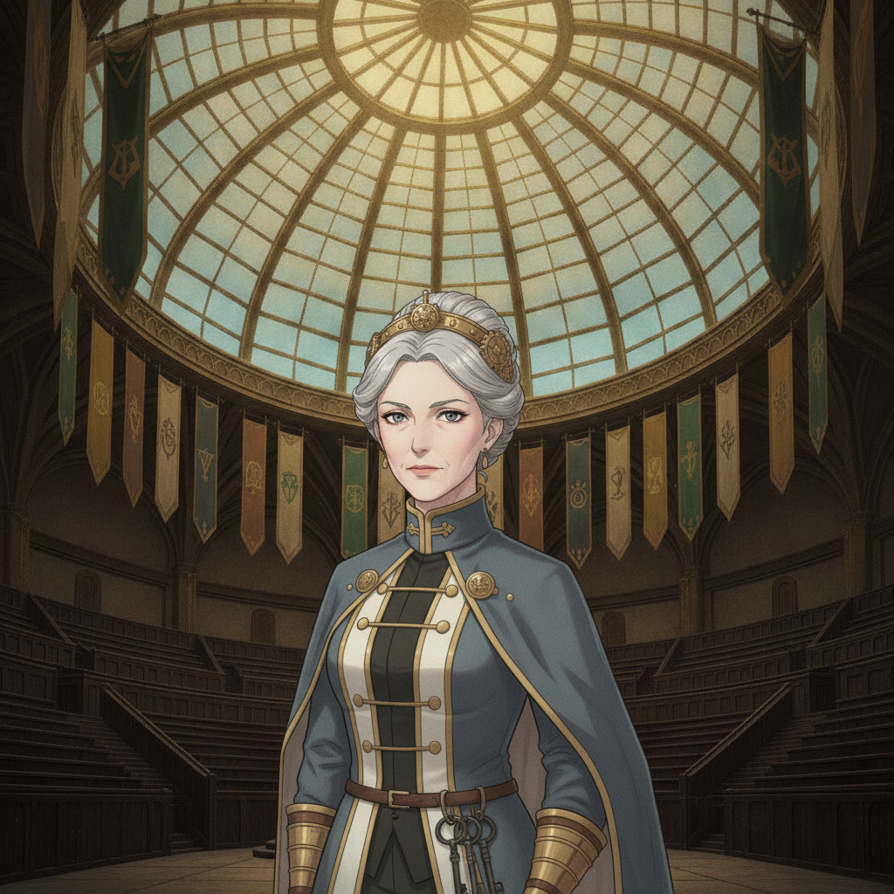
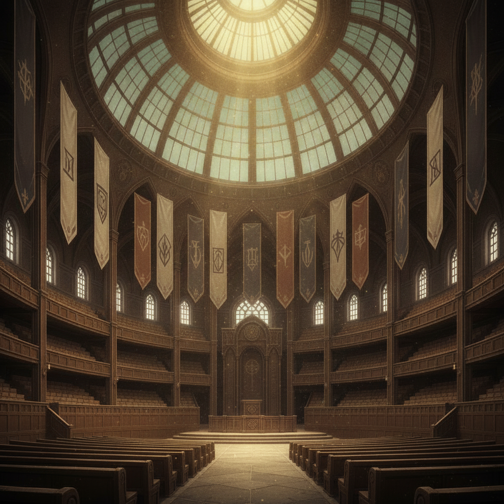

Auria Coyle“Students, you have proven yourselves capable in theory. Now, we test your application. You will be assigned to investigate a set of ancient ruins beyond the wards.”
Auria Coyle“This is not merely a practical exercise. The Weave within those ruins is unstable. You will work in teams, and your objective is to assess and report, not to engage. The stakes are real.”

The Great Assembly Hall is filled with the entire cohort, the banners of the Orders hanging silently overhead. A low murmur runs through the students.
Teams are announced. I'm with Gideon, Pip, and Tobias. The four women who have caught my eye are distributed across other teams. A cold knot tightens in my stomach. The dangers to come are no longer theoretical.